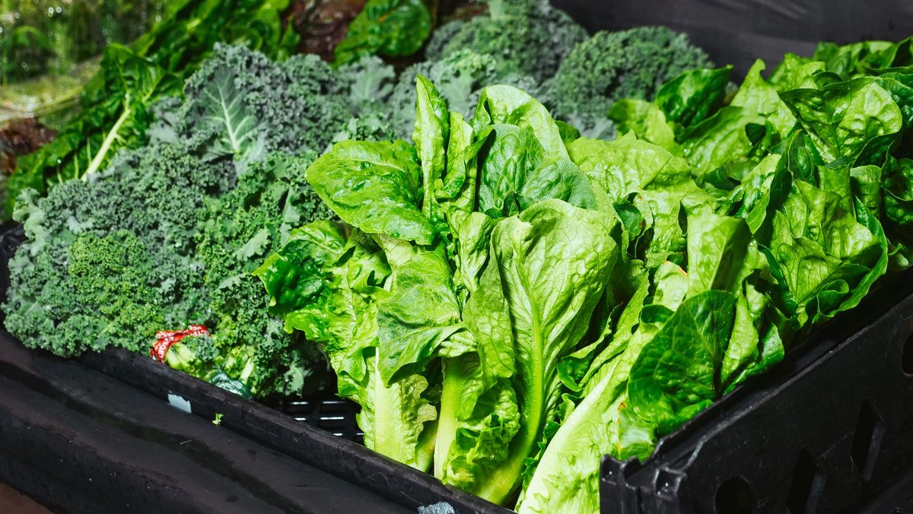
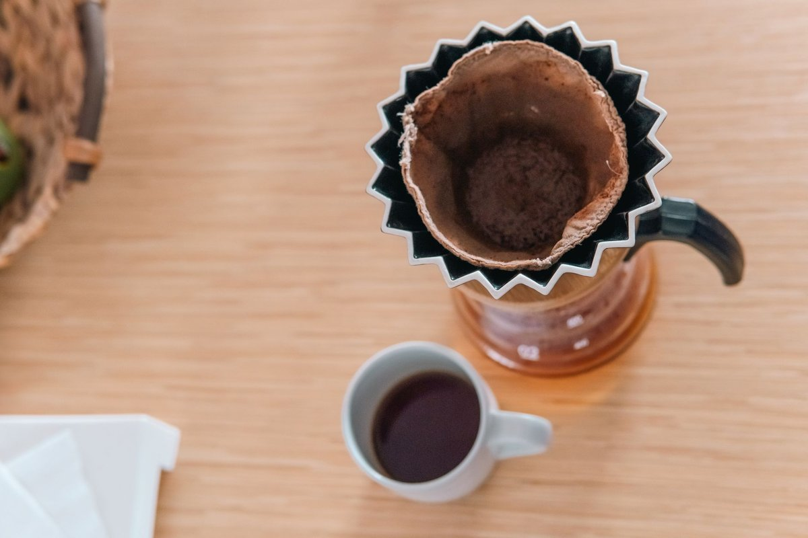
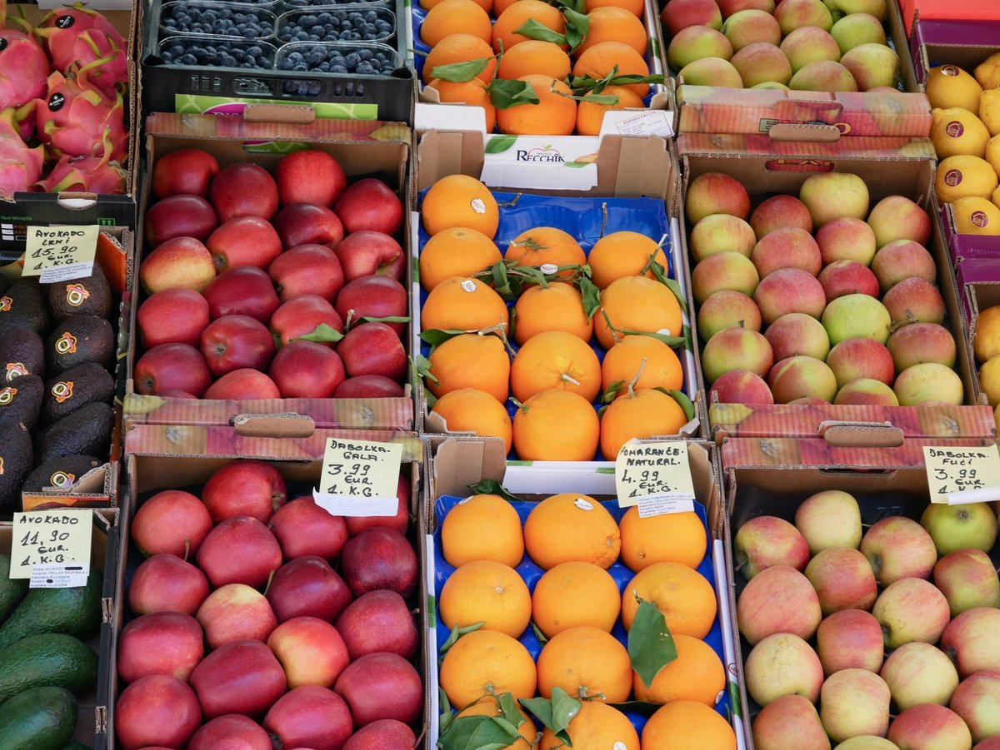

What Nobody Tells You About The Best Foods To Protect Against Atrial Fibrillation

Key takeaways
- I still remember sitting on my kitchen floor at 2 AM, listening to my heart flutter like a trapped sparrow while staring at a half-eaten slice of takeout pizza.
- That terrifying moment forced me to look deeply into The Best Foods To Protect Against Atrial Fibri
- Track what feels sustainable and adjust gradually.
I still remember sitting on my kitchen floor at 2 AM, listening to my heart flutter like a trapped sparrow while staring at a half-eaten slice of takeout pizza. That terrifying moment forced me to look deeply into The Best Foods To Protect Against Atrial Fibrillation and rebuild my diet from scratch.
When dealing with erratic heart rhythms, standard medical advice often feels cold and clinical. Understanding how everyday nutrients influence your heart's electrical system changes everything.
Magnesium-Rich Powerhouses for Electrical Stability
Magnesium acts as your heart's natural calcium channel blocker, regulating cellular voltage. I started blending dark leafy greens like Swiss chard into daily smoothies to get a steady dose without fuss.
Pumpkin seeds and roasted pumpkin butter quickly became my go-to snacks. Pairing these with a related healthy tip keeps your trace mineral intake steady throughout the day.
Potassium Balancing Act
Potassium works alongside sodium to manage the electrical charges across your heart cells. Bananas get all the glory, but avocados and cooked wild salmon offer much higher potassium density per serving.
Swapping out processed sodium-heavy snacks for fresh avocado slices on sprouted sourdough lowered my daily rhythm spikes significantly. Try this another practical guide to balance your daily electrolytes naturally.
The 2-Minute Win
Sprinkle two tablespoons of chia seeds or hemp hearts over your breakfast yogurt right now. You instantly add essential omega-3 fatty acids and magnesium to your morning routine without extra cooking time.
Omega-3 Fatty Acids and Vessel Flexibility
Systemic inflammation irritates heart tissue, making atrial tissue far more prone to erratic firing. Wild-caught sardine fillets packed in olive oil provide dense EPA and DHA that quiet cardiac tissue inflammation.
If canned fish isn't your favorite, walnuts offer an easy plant-based alpha-linolenic acid boost. Integrating these fats into your diet delivers a similar wellness insight that protects blood vessel elasticity.
Prioritize whole-food electrolyte sources over synthetic sports drinks, which are frequently loaded with artificial sweeteners that trigger digestive stress and heart palpitations.
Polyphenols and Heart Tissue Defense
Freeze-dried wild blueberries contain powerful anthocyanins that protect heart cells against oxidative stress. A daily cup of berries reduced my systemic stress markers noticeably over six months.
Extra virgin olive oil rich in oleocanthal also acts as a potent daily cardiac protector. Learn how to stay consistent with this dietary change without feeling overwhelmed.
Quality rest is equally crucial for maintaining steady heart rhythms alongside nutrition. When my heart felt extra jittery at bedtime, using a reliable sound machine helped calm my sympathetic nervous system so I could fall asleep easily. You can check out this high-rated White Noise Machine to support your sleep hygiene goals.
Disclosure: This page may contain affiliate links.
Taking control of your heart rhythm through natural dietary tweaks gives you real autonomy over your long-term health. Don't hesitate to explore more healthy-habits guides to build a life you love.
Educational only — not medical advice.
Recommended Reading
- Boost Your Sleep Quality: Natural Remedies & Tips for Better Rest
- Could Quitting Ultra-Processed Food Boost Your Mental Health?
- Daily Gratitude Practice: Boost Mood & Reduce Stress Naturally
More in healthy-habits

healthy-habitsCan Coffee Help Parkinson’S Symptoms? What Science Says
Can coffee help Parkinson’s symptoms? Discover the science-backed benefits of caffeine, motor control research, and prac
Read article →
healthy-habits6 Science-Backed Habits: Are Supplements The New Snake Oil?
Are Supplements The New Snake Oil? Discover 6 science-backed habits to skip the wasted cash and optimize your health nat
Read article →Related posts
Can Coffee Help Parkinson’S Symptoms? What Science Says
Can coffee help Parkinson’s symptoms? Discover the science-backed benefits of caffeine, motor control research, and prac
Read article →6 Science-Backed Habits: Are Supplements The New Snake Oil?
Are Supplements The New Snake Oil? Discover 6 science-backed habits to skip the wasted cash and optimize your health nat
Read article → healthy-habits
healthy-habitsCoffee Calories Have Jumped Nearly 40%. Sugar Isnt The Biggest Culprit
Coffee calories have jumped nearly 40%. Sugar isnt the biggest culprit behind this shift. Learn how heavy creams and syr
Read article →